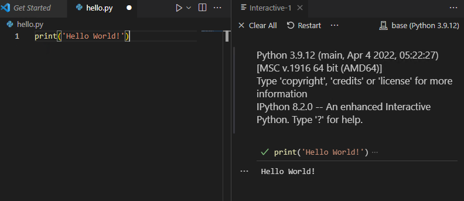
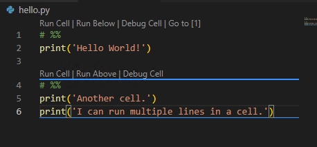

print('Hello World!')Hello world!
Setup the Python environment
In this section we are going to setup the Python developing environment.
VS Code
Click the link to see the detailed steps for VS Code and Anaconda. You may also check out the official document. It contains more features but less details.
We will talk about the relation between Python and Anaconda and more about packages sometime later.
Google Colab
Hello World!
Take VS Code as an example. In the editor window, type in the code, and run the file in the interactive window.

If you see a small green check mark in the interactive window and also the output Hello World!, you are good to go!
Python code cells and Notebooks
In VS Code you can run codes cell by cell. Each cell is separated by the symbol # %%. Each cell may contain multiple lines. You may click the small button on top of the cell or use keybindings.

This feature actually mimic the notebook. We may start a real Python Notebook file by directly creating a file with extension .ipynb.

The layout is straightforward.
Linters
go here d